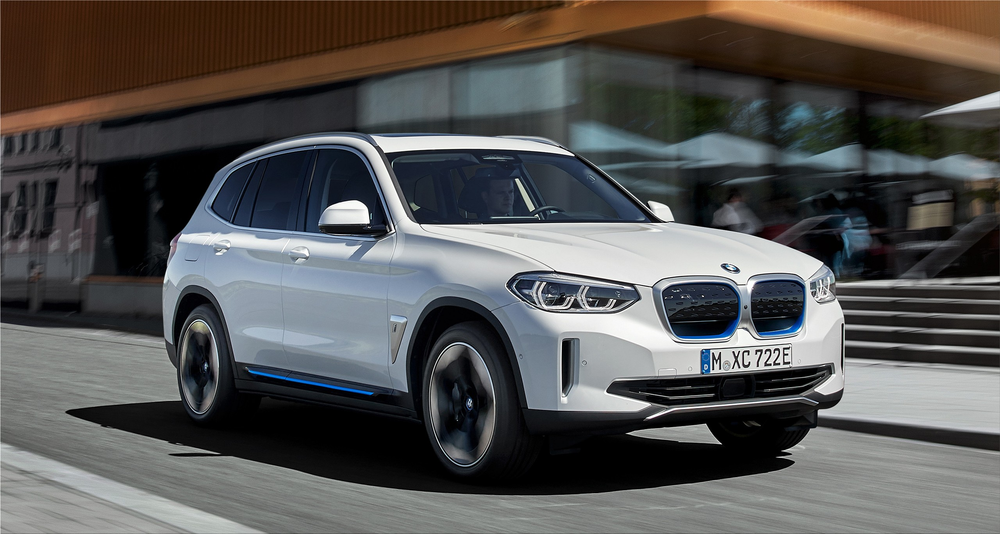

Mercedes GLC 200

Facts about BMW X3
- The base 30i models continue to use BMW's proven 2.0-liter turbocharged four-cylinder engine with 248 horsepower.
- In the sDrive30i, power goes to the rear wheels, and the X3 will reach 60 mph in a swift six seconds.
- The heavier xDrive30i has exactly the same 0 to 60 time and 130-mph top speed
Go Back